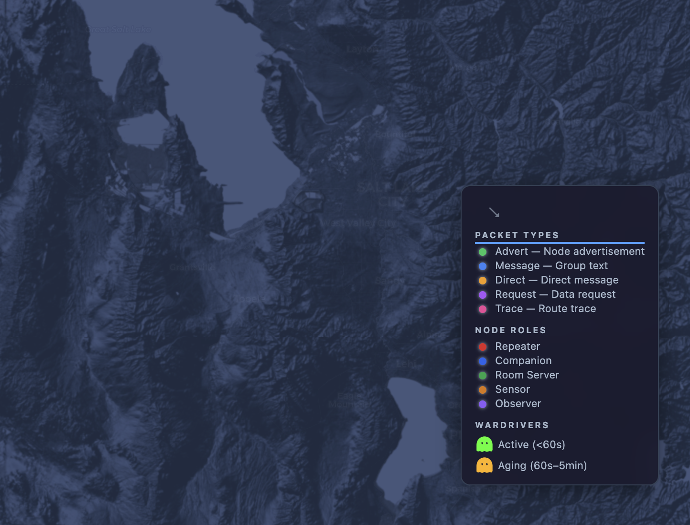

A complete, open-source MeshCore LoRa mesh infrastructure for Salt Lake City — ready for a local enthusiast to take over.
Salt Lake Offline is a sister project to chicagooffline.com, which runs a live MeshCore LoRa mesh network across Chicagoland. We built this identical stack for Salt Lake City because SLC has great terrain for mesh radio and an active outdoor community.
Everything is deployed and running — the MQTT brokers, the packet analyzer, the live map, the health check, the firmware builds. All it needs is someone local to own it.

Nothing proprietary. Fork it, modify it, make it yours.
deploy/slcoffline branch)slcoff-flex branch)The entire stack runs on a t3.small prod server and a t3.small dev server in AWS us-west-2 (Oregon). Monthly cost is around $15-20 total.
GitHub Actions handles deploys — push to main deploys to dev, push to slc-prod deploys to production. TLS certificates are automatic via Caddy + Let's Encrypt.
We'll transfer the AWS instances, the domain (slcoffline.com), and the GitHub repo to you. Or you can clone everything and start fresh on your own infra.
Same US frequency/bandwidth settings used across the MeshCore community. Compatible with all US MeshCore nodes.
910.525 MHz · BW 62.5 kHz · SF 7 · CR 5 · 3-byte path hash
Pre-built firmware with IATA=SLC and the slcoffline.com broker is available for Heltec V3, V4, WSL3, and Station G2 boards.
If you're in Salt Lake City and want to maintain a community mesh network, this is yours for the taking. Everything is built, tested, and documented.
Get in Touch →chicagooffline.com has been running a MeshCore mesh across Chicagoland since early 2026. We built Salt Lake Offline using the same stack to prove the model is portable — any city can have this.
The goal is simple: seed the infrastructure, find a local champion, hand it over. If SLC works, we'll do it again for more cities.